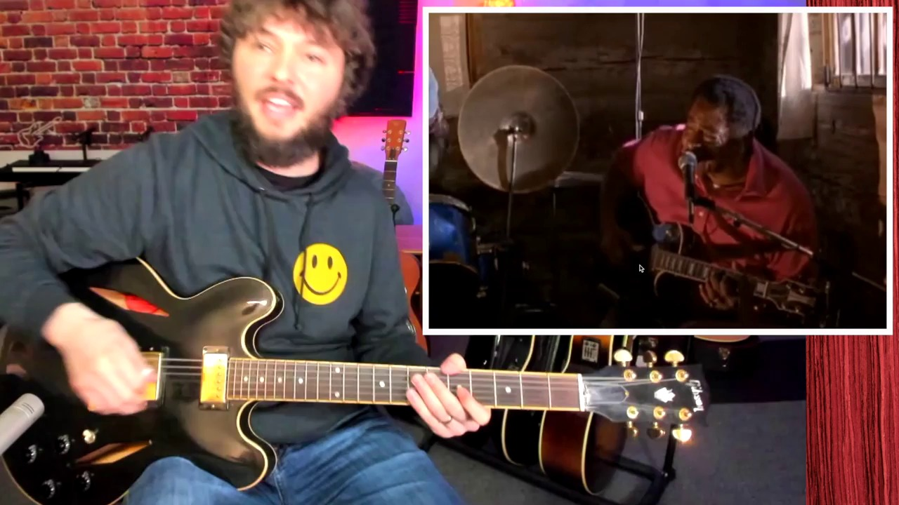

Key Moments



Summary & Script
The Hypnotic Sound of Hill Country Blues - A Guitar Lesson with a Guitar Teacher
Source: https://www.youtube.com/watch?v=a0z-2s5BRBs
Video ID: a0z-2s5BRBs
Overview
The video introduces Hill Country blues, a rhythmic, percussive off‑shoot of Mississippi blues that’s geared toward dancing and partying. It explains the two main sub‑styles—Delta Drone and Hypnotic Boogie—and demonstrates the right‑hand techniques that give the music its signature groove. The instructor breaks down the playing approaches of three genre legends—Fred McDowell, Junior Kimbrough, and R.L. Burnside—showing how to emulate their sound on guitar.
Topics Covered
- Hill Country blues vs. Delta blues – Describes the upbeat, dance‑floor focus and the heavy percussive strumming that distinguishes the style.
- Two core sub‑styles
- Delta Drone: slower, repetitive bass/drone with minor‑pentatonic or blues‑scale riffs, often played on electric guitar.
- Hypnotic Boogie: groove‑based, aggressive rhythmic strumming, emphasizing syncopated thumb‑downstrokes and percussive muting.
- Right‑hand technique fundamentals – Alternating thumb on low strings, index finger on higher strings, strong attack, and immediate muting for a tight, percussive feel.
- Fred McDowell example – Open‑E tuning, slide work, thumb pick usage; demonstrates alternating low‑string thumps with high‑string chops.
- Junior Kimmorle example – Eb‑standard tuning, drone‑note foundation, repetitive riffs over a band; showcases steady thumb rhythm for a “groove‑bass” effect.
- R.L. Burnside example – Solo electric, F tuning, thumb‑only strumming without a pick; highlights the importance of hard thumb attacks on beats 2 & 4 and syncopated index‑finger lifts.
- Practice tips – Simplify by alternating low‑E and a higher string, focus on consistent “1‑2‑3‑4” feel, use a thumb pick to protect the thumb during long sessions.
Key Takeaways
- Hill Country blues is primarily a rhythmic, percussive guitar style designed for dancing, not just solo expression.
- Master the right‑hand pattern: thumb on the low string, index finger on higher strings, aggressive attack, and quick muting.
- Differentiate between Delta Drone (steady drone + riffs) and Hypnotic Boogie (groove‑centric, syncopated strumming).
- Open tunings (e.g., Open E, F) and slide use are common but not mandatory; the core is the hand motion, not the tuning.
- A thumb pick can protect the thumb during the intense percussive strumming typical of this style.
- Studying the masters—Fred McDowell, Junior Kimbrough, R.L. Burnside—provides concrete models for tone, rhythm, and feel.
Notable Quotes
- “The most important thing is the percussive feel with the right hand.”
- “If you just play that [bass line] it doesn’t sound anything like it—you’ve got to add the percussive feel.”
- “People are dancing, having a good time—that groove is the whole point of this style.”
- “You don’t have to use a thumb pick, but it’s helpful because this style will tear your thumb up.”
Podcast Script
JORDAN: Welcome to SlackCasts by PodSlacker — where AI does the watching so you can do the listening. If you want a richer experience with today's episode, visit PodSlacker dot com slash SlackCasts — you'll find a written summary, key frame moments from the video, and an interactive AI chat to explore the topic as deep as you like. Now let's get into it.
MIKE: Today we're diving into hill country blues, that raw, percussive off‑shoot of Mississippi blues that's built for the dance floor. It’s the sound you hear in juke‑joints where the groove is king, not the solo.
JORDAN: The video sets up the contrast right away: hill country versus Delta blues. While Delta leans on lyrical phrasing and melodic bends, hill country strips back to a hypnotic, rhythm‑centric strum that drives people to move.
MIKE: That distinction matters strategically—if you’re a bandleader looking to ignite a crowd, you’ll favor that relentless groove over the more introspective Delta vibe.
JORDAN: The instructor breaks the style into two core sub‑styles: Delta Drone and Hypnotic Boogie. Delta Drone is slower, built around a repetitive bass drone with minor‑pentatonic or blues‑scale riffs, typically on an electric.
MIKE: Hypnotic Boogie, on the other hand, is the high‑energy, syncopated strumming that locks the rhythm section into a danceable pulse. Think of it as the “four‑on‑the‑floor” of blues.
JORDAN: Right‑hand technique is the linchpin for both. The pattern is thumb on the low string, index finger on the higher strings, a hard attack on beats 2 and 4, and immediate muting—either with the left hand or a palm block.
MIKE: In practice that translates to a tight “1‑2‑3‑4” feel where the thumb provides a quasi‑bass line and the index finger adds percussive “chop” on the treble strings, creating that snare‑like snap.
JORDAN: Let’s unpack Fred McDowell’s example. He uses open‑E tuning and a slide, plus a thumb pick. Notice how his thumb thumps the low E while the index finger chops the higher strings on the off‑beats.
MIKE: The slide adds tonal texture, but the real magic is his thumb‑pick‑driven attack—protects the thumb while delivering that aggressive percussive bite essential for long gigs.
JORDAN: He also alternates the index finger between strings to create a syncopated “one‑two‑three‑four” rhythm, then layers slide licks on top. The muting is critical; as soon as the high strings ring, he deadens them to keep the groove tight.
MIKE: From a band perspective, that approach lets the guitar act as both rhythm and lead, filling the space a bass and a snare might occupy in a stripped‑down ensemble.
JORDAN: Moving to Junior Kimbrough, he favors Eb‑standard tuning and a more electric, band‑oriented setting. The drone note sits on the low A string, while repetitive riffs dance over it.
MIKE: Kimbrough’s right hand stays almost locked in a steady thumb‑downstroke loop, which is why his live recordings feel like a relentless pulse. That’s perfect for a juke‑joint where the bass and drums are locked into the same groove.
JORDAN: The video highlights his monotonic bass—essentially a repeated root note that establishes the drone. Over that, he throws in minor‑pentatonic phrases, but the rhythmic foundation never wavers.
MIKE: That kind of consistency is a strategic tool; it gives dancers a predictable anchor while the guitarist can subtly shift melodic content without breaking the party vibe.
JORDAN: Finally, R.L. Burnside. He’s in F tuning, no thumb pick, just his bare thumb doing the heavy strums. His pattern emphasizes crushing the top strings on beats 2 and 4, then lifting the index finger for syncopation.
MIKE: Burnside’s raw thumb attack is a reminder that you don’t need extra gear to get the sound—just hard, consistent right‑hand pressure. It also shows how tone can be gritty even without a slide.
JORDAN: The instructor suggests a practice shortcut: alternate between the low E and a higher string, focusing on that “1‑2‑3‑4” pulse before adding complex riffs. That isolates the core percussive feel.
MIKE: And the thumb pick recommendation? It’s not mandatory, but after a few hours the repetitive attack can literally tear a thumb. A pick adds protection and a slightly brighter attack, which can help cut through a full band.
JORDAN: To sum up, hill country blues is less about virtuoso soloing and more about mastering a percussive right‑hand pattern, using open tunings or standard tunings as tools, not constraints.
MIKE: By internalizing the delta drone vs. hypnotic boogie distinction, and studying the three masters—McDowell, Kimbrough, Burnside—you can bring that dance‑floor energy into any gig, whether you’re headlining a festival or playing a small bar.
JORDAN: That’s a wrap on today's SlackCast. Head over to PodSlacker dot com slash SlackCasts for the written summary, visual key moments, and an AI chat to dive even deeper into today's topic. Until next time — slack off smarter.